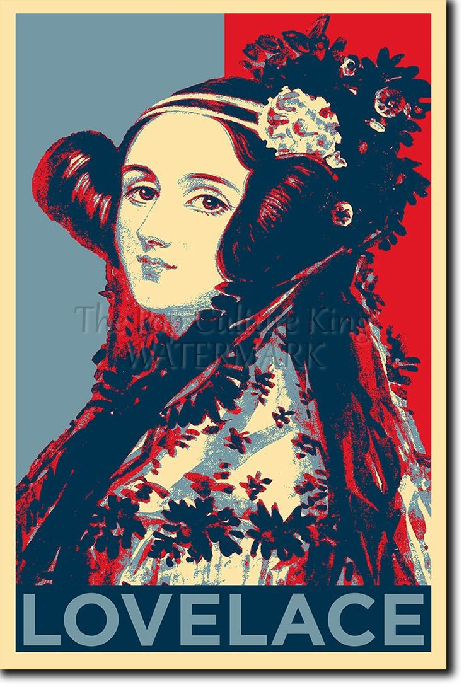

Venha participar deste evento gratuito, que ocorrerá durante 2 dias com palestras para conceitualizar, exemplificar e demonstrar como a matemática é aplicada na computação para resolução de diversos problemas atuais. Contaremos com a presenca de dois especialistas feras em matematica e computacao
Dia 1
09 de setembro

No primeiro dia teremos uma palestra com a especialista Ada Lovelace demonstrando os topicos de matematica necessários para percorrer com excelência o campo da Inteligência Artificial.
Dia 2
09 de setembro
No segundo dia teremos uma palestra com a especialista Ada Lovelace demonstrando os topicos de matematica necessários para percorrer com excelência o campo da Ciência de dados.
Dia 3
10 de setembro
No terceiro dia contaremos com a presenca do matemático Alan Turing ministrando uma palestra sobre a ligação entre a teoria dos números e a criptografia.
O objetivo deste evento é demonstrar como uma base matemática sólida é fundamental para qualquer Dev que deseja ir além em sua carreira e que busca construir aplicações e ferramentas computacionais poderosas
Quer se tornar um dev capaz de resolver problemas complexos de forma inteligente ? Entao, bora mergulhar de cabeca no projeto MATEMATICA ELEMENTAR PARA COMPUTACAO do canal PROGRAMACAO DINAMICA . Neste projeto GRATUITO voce poderá acompanhar diversos vídeos em que sao ensinados conceitos matematicos aplicados a diversas areas da computacao. Segue o link para quem deseja vir para o lado matematico da forca:
Matematica elementar para computacaoPalestrantes
Ada Lovelace
Matemática e escritora inglesa
Alan Turing

Matemático e cientista da computação britânico
Local do Evento
Parque Tecnológico de São José dos Campos
Estrada Dr. Altino Bondensan, 500 - Eugênio de Melo, São José dos Campos - SP, 12247-016